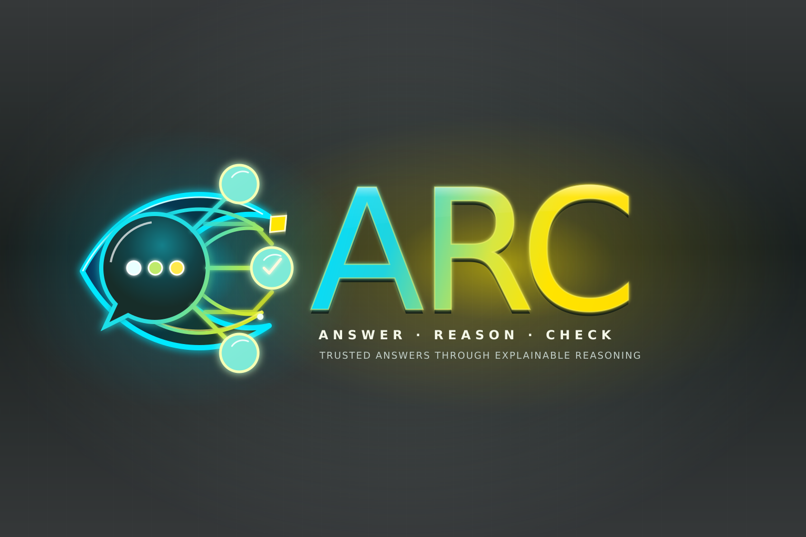

Answer · Reason · Check
ARC — Verifiable answers from better questions
ARC turns a precise question into a portable, executable artifact that answers it, explains the derivation, and checks the result through a route capable of finding errors.
Ask the right question. Get the answer. Understand the reason. Run the check.

01 — Motivation
Why ARC?
AI has made answers abundant. Trustworthy answers are still scarce.
A plausible response can be useful, but plausibility is not evidence. In most AI-assisted workflows, verification remains a manual afterthought: inspect the result, redo the calculation, search for another source, write a test, or ask an expert.
ARC moves verification into the artifact itself:
Typical AI workflow
question → AI → answer → manual verification
ARC workflow
question + data + logic → executable artifact → Answer + Reason + CheckThis moves the most valuable human work upstream: frame the right question, identify the relevant facts and rules, and decide what would count as a convincing check. AI can then do more of the mechanical work without asking us to accept an opaque result.
ARC does not make an answer trustworthy by sounding confident. It makes the answer inspectable, repeatable, and able to prove itself wrong.
02 — Pattern
How an ARC works
Every ARC starts with three explicit inputs:
- Question — what do we actually want to know or decide?
- Data — which facts, measurements, observations, or inputs are relevant?
- Logic — which equations, constraints, policies, algorithms, or definitions govern the result?
From those inputs, an ARC produces three outputs:
- Answer — the direct result to the question.
- Reason — a clear account of how the result follows from the inputs and rules.
- Check — an independent verification that confirms the result or fails visibly.
INPUT OUTPUT
Question ─┐ ┌─ Answer
Data ─────┼─→ compute ────────┼─ Reason
Logic ────┘ └─ CheckA good ARC question is more than a prompt; it is part of the specification. It should be precise enough to distinguish a correct answer, an incorrect answer, and a correct answer to the wrong question.
The result is not trapped in a chat window. It is a self-contained program that can be run again, inspected, shared, tested, and incorporated into an automated workflow.
03 — Trust
The Check is the trust contract
An explanation is not verification. A model can produce a convincing explanation for a wrong result, so the Check must be capable of disagreeing with the Answer.
Where possible, it should take a genuinely different route from the primary computation:
- a second formula or algorithm;
- an invariant or conservation law;
- a reverse calculation;
- exhaustive comparison over a bounded domain;
- a known identity, boundary condition, or dimensional constraint;
- an independent data source;
- another domain-appropriate validation.
A check that cannot fail is not much of a check.
Because the Check is executable, it can run automatically whenever the question, data, logic, or implementation changes. A passing check is visible evidence. A failing check is useful information, not something to hide.
04 — Composition
Small arcs compose into larger arcs
An ARC does not have to remain an isolated calculation. Its inputs and outputs form an explicit contract, so the checked Answer from one arc can become Data for another. Several focused arcs can compose into a larger arc with its own question, reasoning, and end-to-end check.
ARC A ──┐
ARC B ──┼──→ larger ARC ──→ Answer + Reason + Check
ARC C ──┘A concrete example: one checked lunch order
One child ARC calculates how many slices the guests need, another establishes the capacity of a pizza, and a third calculates the gluten-free demand. Their checked answers become inputs to a parent ARC that produces the smallest valid order and then verifies it against the original guest list.
Demand ARC ─────── 36 slices ──┐
Package ARC ── 8 slices/pizza ─┼─→ Order ARC ─→ 5 pizzas: 1 GF + 4 regular
Dietary ARC ───── 4 GF slices ─┘ Checks: contracts, capacity, diet, minimalityRun the interactive composition example → Change its inputs, then inject a stale child result to see both the local and end-to-end checks fail visibly.
The larger ARC does not merely collect results. It checks whether those results compose into a correct answer to the larger question.
| Quality | What composition provides |
|---|---|
| Reliable | Each arc checks its own result; the larger arc checks the composition end to end. Failures remain visible and traceable to bounded components. |
| Scalable | Independent arcs can run separately or in parallel. Larger workflows grow by composition instead of becoming one monolithic program. |
| Performant | Each arc uses only the data and logic its question requires. Unchanged results can be reused, and only affected arcs need to run again. |
| Evolvable | An arc can be improved, replaced, or split behind the same contract. New arcs can be added without rewriting the whole system. |
The discipline is recursive: at every level, make the question explicit, expose the reasoning, and include a check capable of catching a wrong result. Small checked arcs become the building blocks of larger checked arcs.
05 — Scope
What ARC can—and cannot—guarantee
ARC makes trust testable; it does not make computation infallible.
- A check is only as strong as its independence and coverage. Two implementations can share the same mistaken assumption.
- Correct computation cannot repair incorrect, incomplete, or stale data.
- Explicit logic can still encode the wrong policy or model of the world.
- Some questions involve uncertainty or judgment rather than a single provably correct answer. Their checks should validate evidence, constraints, calibration, or process instead.
That is why ARC keeps the Question, Data, Logic, Reason, and Check visible together. It makes assumptions reviewable and failures diagnosable. Human judgment remains essential—especially in choosing the question and deciding what evidence is sufficient.
06 — Applications
Where ARC works especially well
ARC is a natural fit for STEM and other rule-driven domains with explicit structure and testable correctness conditions. Typical uses include:
- recomputing a mathematical result by a second method;
- checking algebraic identities, invariants, and error bounds;
- validating conservation, dimensional, range, or boundary constraints;
- testing an algorithm against known or exhaustive cases;
- checking engineering outputs against system constraints;
- tracing a rule-based decision back to its inputs and policy rules;
- comparing numerical results with analytical or independently computed results.
The pattern also applies beyond questions with one exact answer. A planning or policy ARC can show which evidence and constraints drove a decision, test whether required rules were respected, and fail visibly when its assumptions no longer hold.
07 — Practice
Design principles
- Question first — make the real information need explicit.
- Answer directly — do not bury the result in generated prose.
- Explain the derivation — expose the relevant rules, assumptions, and steps.
- Check independently — use a path that can catch errors in the primary computation.
- Fail visibly — never let broken assumptions or edge cases disappear silently.
- Prefer executable verification — make checking automatic and repeatable.
- Keep artifacts self-contained — preserve the complete case for inspection and reruns.
- Use only what the question needs — minimize irrelevant data and unnecessary inference.
- Compose through explicit contracts — connect checked outputs to defined inputs so larger arcs remain inspectable.
08 — Catalogue
Explore ARC
Each example is a self-contained page with the Answer · Reason · Check triad presented in place.
| Start here | What it demonstrates |
|---|---|
| Euler's Identity | A classic symbolic result with an independent numerical check. |
| Pi | High-precision computation with explicit error bounds. |
| Bike Trip Planning | A practical decision derived from hazards, preferences, and declarative rules. |
| Wind-Turbine Maintenance | Engineering decisions checked against telemetry and policy constraints. |
| Delfour | A purpose-specific insight derived without exposing sensitive source data. |
| Flandor | Several local signals composed into a checked regional decision. |
Browse the full example catalogue
Science
- Body Mass Index — Compute BMI categories with explainable thresholds and sanity checks.
- Grass Seed Germination — Model germination states and transitions with rule checks.
- Leg Length Discrepancy Measurement — Derive a measurement from four landmarks with explicit calculation steps.
Economics / Insight Economy
- Delfour — microeconomics — Turn sensitive local household data into a purpose-specific shopping insight without exposing the underlying condition.
- Flandor — macroeconomics — Combine privacy-preserving regional signals into a checked stabilization decision and select the lowest-cost eligible retooling package.
Technology
- Auroracare — Purpose-based medical data exchange.
- Clinical Care Planning — Derive care plans from observations, guidelines, and policy constraints.
- GPS Clinical Bench — Benchmark rule-based clinical decisions with transparent audit trails.
- Graph of French Cities — Compute shortest paths and verify graph connectivity.
- Health Information Processing — Transform clinical payloads with typed rules and validation.
- Linked Lists — Term-logic example checked using Resolution.
- REST-Path — Explain link-following over REST resources and verify pre/post conditions.
- Turing Machine — Run tapes with explicit transitions and verify halting and tape contents.
Engineering
- Bike Trip Planning — Route priorities from hazards, preferences, and declarative JSON rules.
- Building Performance — Reason about energy and comfort metrics and verify rule-based outcomes.
- Control System — Model feedback loops and verify stability and response conditions.
- Eco-Route — Select lower-emission routes from traffic, grade, and policy goals.
- GPS Bike — Plan a bicycle route from Gent to Maasmechelen.
- Lee Algorithm — Find a maze route and trace the optimal wavefront path.
- Wind-Turbine Maintenance — Plan maintenance from telemetry and policy rules with auditable outcomes.
Mathematics
- Ackermann — Compute A2 with exact hyper-operations and safe handling of huge values.
- Binomial Theorem — Verify the sum of all binomial coefficients.
- Collatz — Generate trajectories and check invariants for the Collatz map.
- Complex Identities — Show symbolic steps for complex-number equalities with auditable reasoning.
- Euclid's Infinitude of Primes — Explain Euclid's proof and run computational checks.
- Euler's Identity — Derive and numerically check a classic identity.
- Fibonacci — Compute large Fibonacci numbers with fast doubling and proof-style checks.
- Fundamental Theorem of Arithmetic — Explore unique prime factorization.
- Gödel Numbering — Demonstrate a classic Gödel numbering construction.
- Group Theory — Verify closure, identity, inverses, and associativity on examples.
- Kaprekar's Constant — Exhaustively test every four-digit state in Kaprekar's routine.
- Matrix Basics — Add, multiply, and invert matrices with dimension and property checks.
- Matrix Multiplication — Demonstrate and check that matrix multiplication is not commutative in general.
- Newton–Raphson — Find roots numerically and check residual error.
- Peano Factorial — Show that 5! = 120 using Resolution.
- Pi — Compute high-precision π with the Chudnovsky series and error-bound checks.
- Polynomial Roots — Find roots simultaneously and verify convergence on representative cases.
- Primes — Generate and test primes with explicit certificates or factor checks.
- Pythagorean Theorem — Compute triangle sides and confirm the result algebraically.
- Roots of Unity — Place complex roots on the unit circle and check spacing, sums, and products.
09 — Context
ARC and the Insight Economy
ARC fits naturally with Professor Ruben Verborgh's vision in Inside the Insight Economy: derive a purpose-specific insight for a particular recipient, context, and moment instead of moving or accumulating more raw data than necessary.
A well-formed question expresses that purpose. It lets a system focus on the data and logic the question actually needs, derive an actionable answer, explain the derivation, and verify the result.
- Delfour shows the micro-economic case: sensitive household information stays local while a narrowly scoped shopping insight is derived for one retailer context, with explicit policy and checks.
- Flandor shows the macro-economic case: exporters, labour-market actors, and grid operators keep detailed evidence local while a regional ARC composes their signals into a time-bounded stabilization decision.
Together, they illustrate the principle: move the minimum useful insight, not the maximum available data.
ARC does not replace the Insight Economy architecture. It complements it with a pragmatic discipline for question-directed, explainable, verifiable computation.
10 — Ambition
What ARC is trying to make normal
AI should not force us to choose between speed and trust.
The practical ambition of ARC is simple: formulate a precise question, answer it directly, show how the result was derived, and perform a meaningful check without requiring a person to rebuild the entire solution by hand.
Better questions → explicit reasoning → independently checked answers.